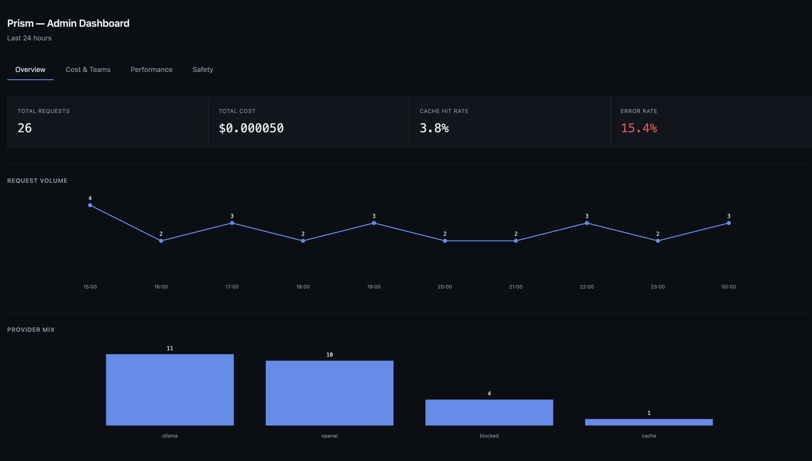
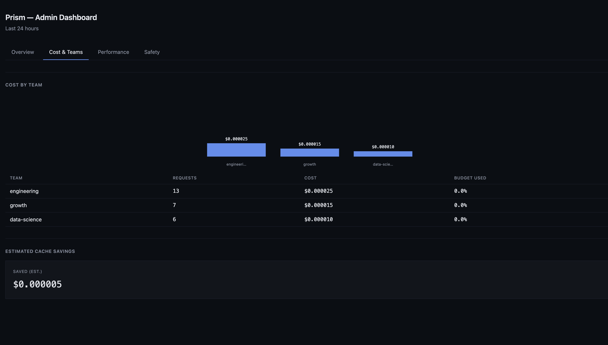
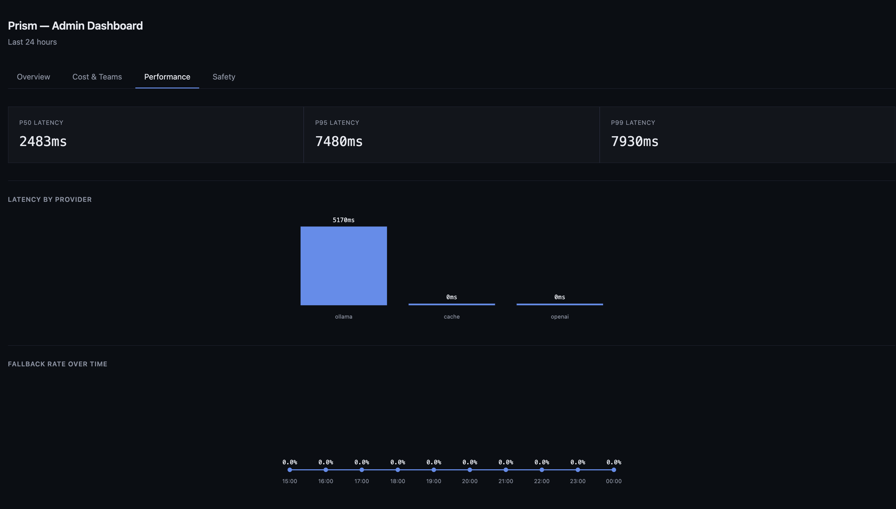
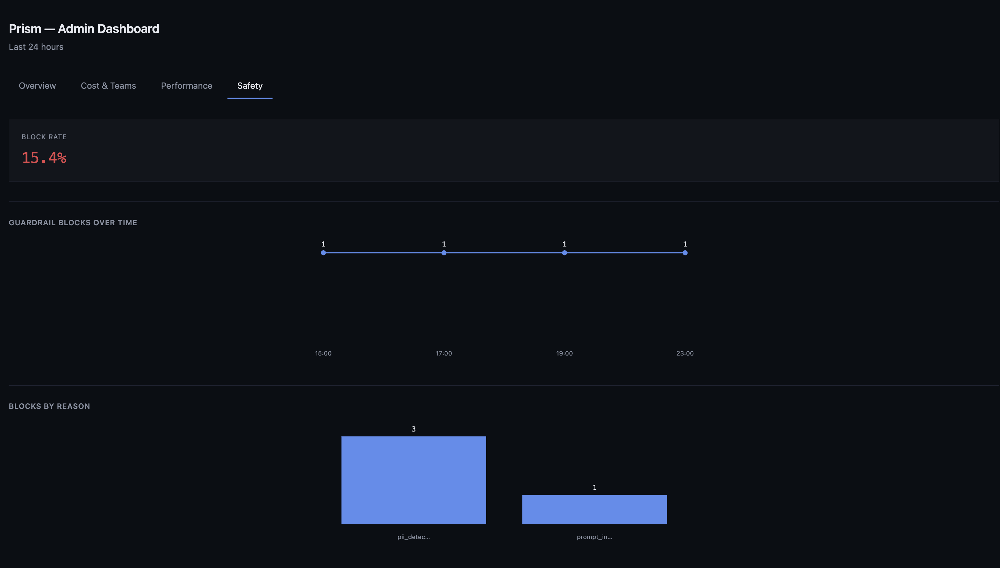
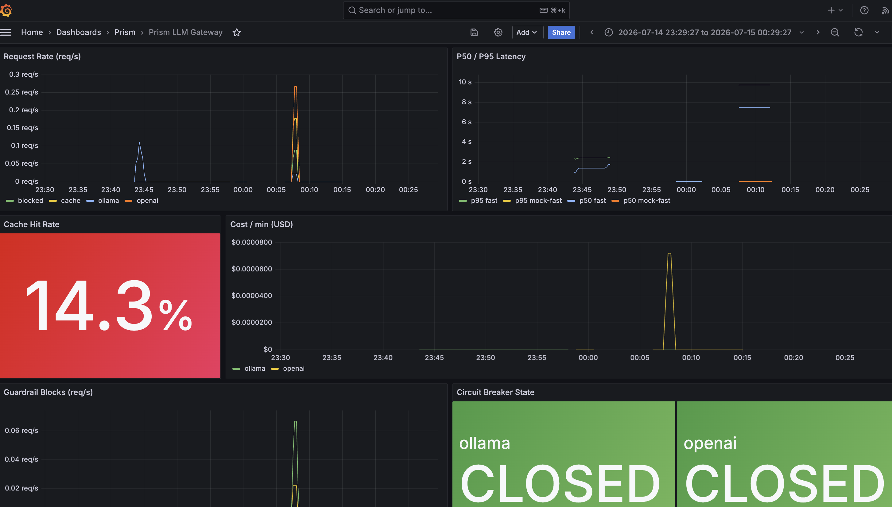

A production-shaped LLM gateway: multi-provider routing with automatic failover, PII/prompt-injection guardrails, exact caching, cost tracking, and full observability — built solo, benchmarked with real numbers.
Every team that scales past "call OpenAI directly from the app" runs into the same five problems at once: unpredictable cost, no visibility into failures, security exposure (PII leakage, prompt injection), no resilience when a provider degrades, and no way to swap models without touching application code. Commercial products in this exact category — LiteLLM, Portkey, Helicone, Kong AI Gateway — are venture-funded because the problem is real. Prism is a real, working version of that same idea, with the tradeoffs made explicit rather than hidden.
Every call to /v1/chat/completions passes through the same pipeline. Two paths exit early — a guardrail block and an exact-cache hit — both skipping the provider call (and its cost) entirely.
flowchart TD
Client(["Client (openai SDK, base_url=prism)"]) -->|"POST /v1/chat/completions"| Auth
Auth["Auth: hash key + Redis rate limit"] -->|invalid key| Reject401(["401 Unauthorized"])
Auth -->|over limit| Reject429(["429 Rate Limited"])
Auth -->|ok| Guardrail
Guardrail["Guardrail pre-check: PII + injection scan"] -->|flagged| Block(["400 Blocked"])
Guardrail -->|clean| CacheLookup
CacheLookup{"Exact cache hit?"}
CacheLookup -->|yes| CacheHit(["200: cache_hit=true, cost=$0"])
CacheLookup -->|no| Router
Router["Router: fallback chain + circuit breaker"] --> Provider
Provider["Provider call: Ollama / OpenAI-mock / Anthropic-mock"]
Provider -->|success| CostLog
Provider -->|failure, try next| Router
Provider -->|all exhausted| Reject503(["503 All providers failed"])
CostLog["Cost calc + log request"] --> CacheWrite
CacheWrite["Cache write"] --> Response(["200 + prism_metadata"])
FIG. 1 — Request flow through the gateway pipeline
graph LR
subgraph host["Host machine"]
Ollama["Ollama: llama3.2:3b"]
end
subgraph compose["docker-compose"]
App["app: FastAPI / Prism"]
Postgres[("postgres + pgvector")]
Redis[("redis")]
Jaeger["jaeger: trace UI"]
Prometheus["prometheus: metrics scrape"]
Grafana["grafana: dashboards"]
end
App -->|SQL| Postgres
App -->|cache + rate limit| Redis
App -->|OTLP spans| Jaeger
App -.->|chat + embeddings| Ollama
Prometheus -->|scrape| App
Grafana -->|query| Prometheus
FIG. 2 — Infrastructure topology (Ollama runs on the host, not containerized)
A four-tab admin dashboard (/admin/dashboard) — Overview, Cost & Teams, Performance, Safety — built with hand-rolled vanilla JS and inline SVG charts, no chart library, no build step. Alongside it, a Grafana operational dashboard fed by Prometheus and OpenTelemetry.

FIG. 3 — Overview

FIG. 4 — Cost & Teams

FIG. 5 — Performance

FIG. 6 — Safety

FIG. 7 — Grafana operational dashboard
From a Locust load test (src/tests/load/) — see the repo for the exact run procedure. Machine: M4 Pro, single uvicorn process, no distributed workers.
Real Ollama inference averaged 595ms (p95 1134ms) vs. the mock providers' 12.6ms and the exact cache's 7.9ms — the actual gateway-overhead-vs-provider-latency isolation these numbers are built to show.
| Decision | Choice | Why |
|---|---|---|
| Deployment | Docker Compose, local only | Cloud (EKS/Terraform) deliberately scoped out — fast local loop mattered more for this project's goals than a teardown-able cloud environment would have added. |
| Self-hosted model | Ollama, not vLLM | No GPU needed; runs via Metal on Apple Silicon with an OpenAI-compatible API out of the box. |
| Vector store | pgvector, not wired in | Semantic cache is implemented but not called from the live request path — only exact-match caching is live today, stated plainly rather than discovered later. |
| Circuit breaker | Hand-rolled state machine | Built from scratch deliberately to demonstrate understanding of the pattern, not just import it. Standard libraries everywhere else. |
| Injection detection | Regex/heuristic scorer | Honest about its limits, fast, no added inference cost. Named "v1" with a clear upgrade path. |
| Admin UI | Hand-rolled dashboard, not Streamlit | Four tabs, real aggregation queries, hand-rolled SVG charts — doubles as a demonstration of frontend fundamentals without a framework or build step. |